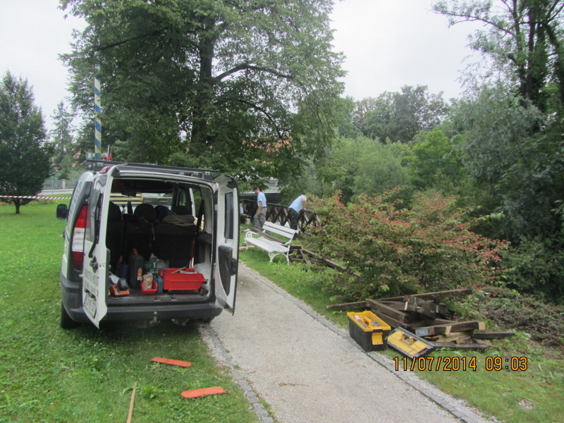

Welcome to Popravilo vodovoda
Kršenje odloka: izgovori o popravilu vodovoda pri znancu, delu na vrtu v drugem kraju... | Prlekija-on.net Ljutomer
2020.09.07 05:54Navigacija Naslovnica Lokalne novice Vse lokalne novice Družabno Črna kronika Kultura in izobraževanje Šport Politika Gospodarstvo Narava Zanimivosti Najmlajši Glasba in film Portal Intervjuji Kolumne in komentarji Slovenija Ostale novice Koronavirus Vse novice o koronavirusu COVID-19 - aktualno stanje Arhiv Portal O spletnem portalu Pravila uporabe Splošni pogoji Izjava o zasebnosti Piškotki Oglaševanje Izdelki Jas sen Prlek/Prlečka Prleške cejtnge Prleška mladina Prlekija O Prlekiji Spletna kamera Zgodovina Prlekije Pomembni Prleki Kulturne znamenitosti Etnološke znamenitosti Arheološka najdišča Panoramske slike Kasaške dirke Vaški grbi Prleška himna Künštni Prleki Prleški slovar Interaktivno Forum Galerija Video Igre Blog Ankete Dogodki Mali oglasi Zaposlitve Vreme Stavnica Spletna trgovina Iskanje Kontakt Danes je ponedeljek, 7. september 2020 Prijava/Registracija Naslovnica Črna kronika Kršenje odloka: izgovori o popravilu vodovoda pri znancu, delu na vrtu v drugem kraju...
Kršenje odloka: izgovori o popravilu vodovoda pri znancu, delu na vrtu v drugem kraju...
Policisti so minuli konec tedna ugotovili 103 kršitve odloka o začasni prepovedi gibanja in zbiranja ljudi, pri tem pa ugotavljajo, da so vozniki zelo iznajdljivi pri opravičevanju razlogov vožnje v času veljave odloka
Prlekija-on.net, ponedeljek, 6. april 2020 ob 17:34 5Policija
Minuli konec tedna, od 3. do 5. aprila, so policisti zaradi zagotavljanja zdravja vseh prebivalcev Slovenije preverjali, ali prebivalci spoštujejo prepovedi gibanja in zbiranja, ki so bile 30. marca uvedene z Odlokom o začasni prepovedi gibanja in zbiranja ljudi na javnih mestih in površinah v RS ter prepovedi gibanja izven občin. Poostren nadzor so izvedli na avtomobilskih cestah ter ostalih državnih in lokalnih cestah.
Rezultati poostrenega nadzora na avtocestnem omrežju
Med nadzorom, ki so ga na slovenskem avtocestnem omrežju izvajali od petka do nedelje, je sodelovalo 139 policistov. Kontrolirali so 3.348 voznikov in pri tem ugotovili 103 kršitve odloka. Od tega so v 69 primerih izrekli opozorilo, za 34 kršitev pa bodo podali predlog drugemu prekrškovnemu organu (Zdravstvenemu inšpektoratu RS).
Policija preverja, ali spoštujete prepovedi gibanja in zbiranja
Ta konec tedna tako lahko policijska in tudi vojaška vozila ter redarje, opazimo na naših cestah, predvsem v bližini občinskih mej, kjer preverjajo voznike ali imajo opravičen razlog, da vstopajo na območja drugih občin
sobota, 4. april 2020 ob 09:38 1Pri voznikih, ki so jih ustavili, so policisti ugotovili tudi 38 ostalih kršitev cestnoprometnih predpisov (vožnja pod vplivom psihoaktivnih snovi, neizpolnjevanje pogojev za udeležbo v cestnem prometu pri voznikih in vozilih itd.).
Najpogostejši izgovori pri nadzoru so bili povezani z oskrbo starih staršev, obiskom sorodnikov ali prijateljev, popravilom vodovoda pri znancu, delom na vrtu v drugem kraju ali obiskom vnukov, nekateri so navajali, da gredo iskat zaščitna sredstva v svoje podjetje itd. Policisti ugotavljajo, da so vozniki zelo iznajdljivi pri opravičevanju razlogov vožnje v času veljave odloka.
Od 30. marca do 5. aprila policisti kršiteljem odloka izrekli že 1.366 opozoril
Policisti od uveljavitve odloka izvajajo nadzor nad upoštevanjem odloka na mobilnih kontrolnih točkah, ki jih določijo glede na problematiko in operativne možnosti. Tako so policisti v dneh veljavnosti odloka (od 30. marca do včeraj, 5. aprila 2020) izrekli 1.366 opozoril, v 1.574 primerih pa so odstopili predlog Zdravstvenemu inšpektoratu RS. Kontrole so izvajali na več mestih, in sicer tako na območjih blizu meje kot v notranjosti države, ter se odzivali na prijave občanov ter drugih nadzornih organov.
Policija v večini primerov ugotavlja okoliščine potovanja/gibanja ljudi, pri čemer najpogosteje ugotavljajo, da ljudje spoštujejo omejitve in da med občinami potujejo osebe, ki spadajo v izjeme. Pri tem policisti pogosto upoštevajo življenjske zdravorazumske okoliščine ljudi, če slednji pri tem upoštevajo varnostne ukrepe. Tiste, ki zaradi malomarnosti ali ignorance kršijo določila odloka oz. Zakona o nalezljivih boleznih, pa napotijo na naslov stalnega bivališča oz. jim ukažejo upoštevanje odloka. Policija ni pristojna za izvedbo prekrškovnih postopkov po Zakonu o nalezljivih boleznih, zato ugotovitve odstopajo Zdravstvenemu inšpektoratu.
policija omejitev gibanja preverjanje koronavirusVeč v Črna kronika
Oživljali osebo, a žal neuspešno
nedelja, 6. september 2020 ob 14:21Po trčenju je dva potnika izvrglo iz vozila
nedelja, 6. september 2020 ob 10:48Policisti obravnavali trinajst kršitev javnega reda in miru
nedelja, 6. september 2020 ob 08:45Anketa
Nalagam ...
Prlekija-on.net je največji in najbolje obiskan spletni medij v Prlekiji.
Vpisan je v razvid medijev, ki ga vodi Ministrstvo za kulturo Republike Slovenije, pod zaporedno številko 1529.
Glavni in odgovorni urednik:
Dejan Razlag
041 956 530
info@prlekija-on.net
Lokalne novice
Družabno Črna kronika Kultura Šport Politika Gospodarstvo Narava Zanimivosti Glasba in film NajmlajšiOstale novice
Slovenija Intervjuji Kolumne in komentarji Portal Globalne noviceDruge vsebine
Spletna trgovina Blog Forum Galerija Video Igre Ankete Dogodki Mali oglasi Zaposlitve VremeSpremljajte nas
RSS Facebook Twitter Youtube Instagram Naročanje Trgovina© Prlekija-on.net | 2005 - 2020 | Vse pravice pridržane | 041 956 530 | info@prlekija-on.net
Splošni pogoji Izjava o zasebnosti Piškotki Oglaševanje Facebook prijavaali
prijava z uporabniškim imenom
Ste pozabili geslo? Še nimate računa? Registrirajte se